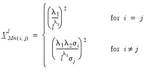
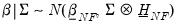
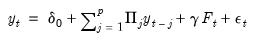
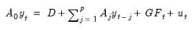
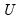
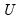

|
|
|

are given by:





are given by:
 vector of endogenous variables (
vector of endogenous variables ( variables and
variables and  lags)
lags) vector of intercept coefficients
vector of intercept coefficients matrices of lag coefficients
matrices of lag coefficients is a vector of exogenous variables
is a vector of exogenous variables is a matrix of exogenous coefficients
is a matrix of exogenous coefficients is an
is an  vector of errors where we assume
vector of errors where we assume  and corresponding coefficients into
and corresponding coefficients into  ,
,  and
and  are ,
are ,  is , and
is , and  is
is  , for when
, for when  presample observations on
presample observations on  are available.
are available. . Let and
. Let and  . Then and
. Then and  with fixed
with fixed  .
. .
. and an inverse Wishart prior on
and an inverse Wishart prior on  .
. and an inverse Wishart prior on
and an inverse Wishart prior on  .
. is known; replacing
is known; replacing  with an estimate . This assumption yields simplifications in prior elicitation and computation of the posterior.
with an estimate . This assumption yields simplifications in prior elicitation and computation of the posterior. . The prior on the
. The prior on the  elements of
elements of  is assumed to be:
is assumed to be: is .
is . .
. and
and  that lead to easy computation of the posterior distributions.
that lead to easy computation of the posterior distributions. is set to a vector of nearly all zeros, with only the elements corresponding to a variable’s own first lag being non-zero. Those own lag elements are generally set to 1 or 0, as specified by the hyper-parameter
is set to a vector of nearly all zeros, with only the elements corresponding to a variable’s own first lag being non-zero. Those own lag elements are generally set to 1 or 0, as specified by the hyper-parameter  .
. is assumed to be a diagonal matrix:
is assumed to be a diagonal matrix: -th equation are:
-th equation are: ,
,  , and
, and  are hyper-parameters, and is the square root of the corresponding diagonal element of
are hyper-parameters, and is the square root of the corresponding diagonal element of  .
. being known but imposes an improper prior on
being known but imposes an improper prior on  .
. , the prior is from a normal distribution conditional on
, the prior is from a normal distribution conditional on  :
: is
is  .
. , all of the prior information is contained in the degrees-of-freedom parameter .
, all of the prior information is contained in the degrees-of-freedom parameter . is also from a normal distribution:
is also from a normal distribution: is inverse-Wishart:
is inverse-Wishart: ,
,  , and
, and  .
.  .
. and are scalars.
and are scalars. being known, this time imposing a prior distribution.
being known, this time imposing a prior distribution. is
is  , and
, and  is
is  .
. is
is is,
is, and
and  , along with prior specifications of and .
, along with prior specifications of and . and
and  are scalars.
are scalars. on
on  .
.  and
and  are:
are: is
is  , and is
, and is  . Note the cross-equation independence of the prior implies that is of full size.
. Note the cross-equation independence of the prior implies that is of full size. to draw
to draw  ), then, after discarding a number of burn-in draws, taking the mean of the draws.
), then, after discarding a number of burn-in draws, taking the mean of the draws. , optionally set to non-zero values.
, optionally set to non-zero values. , , and
, , and  are scalars.
are scalars. .
.  and
and  are defined as before,  is
are defined as before,  is  ,
,  is
is  , and
, and  is , for
is , for  when
when  presample observations on
presample observations on  are available.
are available. given , using either the normal-flat or normal-Wishart distributions.
given , using either the normal-flat or normal-Wishart distributions.  is given by:
is given by: is
is  .
. is:
is: is then:
is then: is:
is: and
and  are estimates obtained from a conventional VAR, and .
are estimates obtained from a conventional VAR, and . . However, formulation of the marginal likelihood does require a prior on
. However, formulation of the marginal likelihood does require a prior on  , and as such, EViews does not report a marginal likelihood.
, and as such, EViews does not report a marginal likelihood. and along similar lines to the Litterman priors.
and along similar lines to the Litterman priors. , being non-zero.
, being non-zero.  is assumed to be diagonal:
is assumed to be diagonal: ,
,  , and are hyper-parameters, and
, and are hyper-parameters, and  is the square root of the corresponding diagonal element of
is the square root of the corresponding diagonal element of  .
. is then:
is then: is:
is: -th periods.
-th periods. , is a scaling factor. If , the observation is uninformative. As , all endogenous variables in the VAR are set to their unconditional mean, the VAR exhibits unit roots without drift, and the observation is consistent with cointegration.
, is a scaling factor. If , the observation is uninformative. As , all endogenous variables in the VAR are set to their unconditional mean, the VAR exhibits unit roots without drift, and the observation is consistent with cointegration. , as an input.
, as an input. is taken as known. Since it is not known in practice, an estimate is used in the construction of the prior covariance for
is taken as known. Since it is not known in practice, an estimate is used in the construction of the prior covariance for  ,
,  . For the independent normal Wishart prior, the initial covariance matrix is used as the starting point for the Gibbs sampler.
. For the independent normal Wishart prior, the initial covariance matrix is used as the starting point for the Gibbs sampler. . The Giannone, Lenza and Primiceri prior uses the initial
. The Giannone, Lenza and Primiceri prior uses the initial  to form the prior covariance matrix, either as a fixed element, or as the starting point for the optimization routine.
to form the prior covariance matrix, either as a fixed element, or as the starting point for the optimization routine.